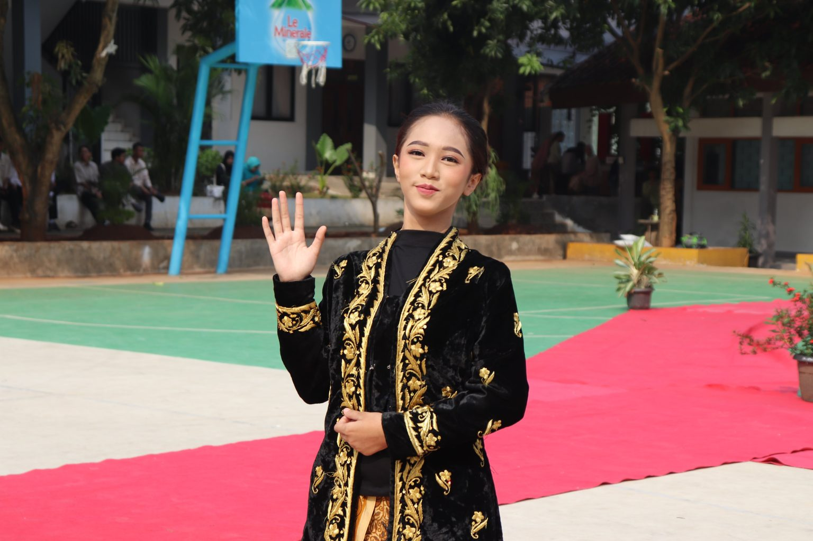

|
Website CarissaMy Dear, Shuri Von Neuschwanstein
|
|
| Beranda | Tentang Saya | Sekolahku | Syair Lagu | |
SMKN 1 Tangerang Meriahkan Hari Kartini dengan Kebaya dan Fashion Show30 April 2024  Tangerang – SMKN 1 Tangerang memperingati Hari Kartini melalui partisipasi para siswi yang mengenakan kebaya sebagai bentuk penghormatan terhadap Raden Ajeng Kartini, tokoh emansipasi perempuan Indonesia. Kegiatan ini menjadi upaya untuk melestarikan budaya sekaligus menanamkan nilai perjuangan Kartini kepada generasi muda. |
Tautan eksternal |
| © Copyright Carissa Evelyn Al-Khanza, 2026. | |